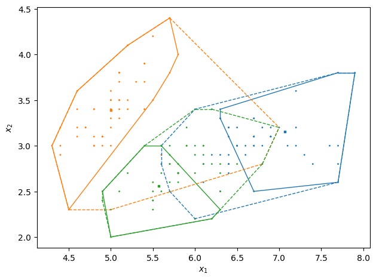
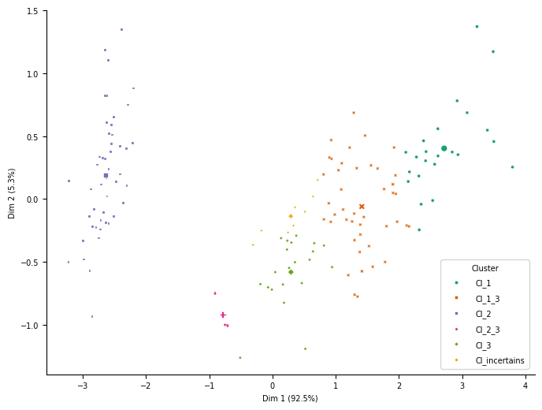

Example usage ecm clustering
Here we will demonstrate how to use evclust to make an evidential clustering with the iris dataset. Assuming that there is uncertainty in the species data and that there may be species in several clusters at once or in none at all
import evclust
print(evclust.__version__)
---------------------------------------------------------------------------
ModuleNotFoundError Traceback (most recent call last)
~\AppData\Local\Temp\ipykernel_12592\3972515972.py in <cell line: 1>()
----> 1 import evclust
2
3 print(evclust.__version__)
ModuleNotFoundError: No module named 'evclust'
Imports
from evclust.ecm import ecm
from evclust.datasets import load_decathlon, load_iris
from evclust.utils import ev_summary, ev_plot, ev_pcaplot
Data
There is test data in the package. Here we’re going to use the popular IRIS data
# Import test data
df = load_iris()
df=df.drop(['species'], axis = 1) # del label column
df.head()
| sepal_length | sepal_width | petal_length | petal_width | |
|---|---|---|---|---|
| 0 | 5.1 | 3.5 | 1.4 | 0.2 |
| 1 | 4.9 | 3.0 | 1.4 | 0.2 |
| 2 | 4.7 | 3.2 | 1.3 | 0.2 |
| 3 | 4.6 | 3.1 | 1.5 | 0.2 |
| 4 | 5.0 | 3.6 | 1.4 | 0.2 |
ECM
# Evidential clustering with c=3
from evclust.ecm import ecm
model = ecm(x=df, c=3, beta = 1.1, alpha=0.1, delta=9)
E:\package\wpy3\scripts\evclust\src\evclust\ecm.py:151: RuntimeWarning: invalid value encountered in power
J = np.nansum((m ** beta) * D * np.tile(card.reshape(1, f-1), (n, 1))) + delta2 * np.nansum(mvide ** beta)
[1, 79.04204205886721]
[2, 77.1809971156152]
[3, 77.71954184923455]
[4, 78.20500360489865]
[5, 78.38485172488124]
[6, 78.426505663942]
[7, 78.43461123151104]
[8, 78.42663238932644]
[9, 78.41438536914632]
[10, 78.40285174720343]
[11, 78.39349725868567]
[12, 78.38639882014043]
[13, 78.38119265433875]
[14, 78.37744461758665]
[15, 78.37477440932645]
[16, 78.37288340697239]
[17, 78.37154879630504]
[18, 78.37060869878776]
Read and Summary the output
We can summary the output of the ecm model, to see Focal sets or Number of outliers
ev_summary(model)
------ Credal partition ------
3 classes,
150 objects
Generated by ecm
Focal sets:
[[0. 0. 0.]
[1. 0. 0.]
[0. 1. 0.]
[1. 1. 0.]
[0. 0. 1.]
[1. 0. 1.]
[0. 1. 1.]
[1. 1. 1.]]
Value of the criterion = 78.37
Nonspecificity = 0.25
Prototypes:
[[7.06735782 3.15503572 5.97426259 2.16735215]
[4.99979226 3.39209842 1.49129615 0.25657165]
[5.56682731 2.5609326 4.11715105 1.30020809]]
Number of outliers = 0.00
Plot the creadal partition
We can now plot the result based on the two features axes using ev_plot function
ev_plot(x=model,X=df)

Plot with pca
You can view the results on the pca axes
ev_pcaplot(data=df, x=model, normalize=False)

ev_pcaplot(data=df, x=model, normalize=False, splite=True)
No artists with labels found to put in legend. Note that artists whose label start with an underscore are ignored when legend() is called with no argument.
<Figure size 800x600 with 0 Axes>